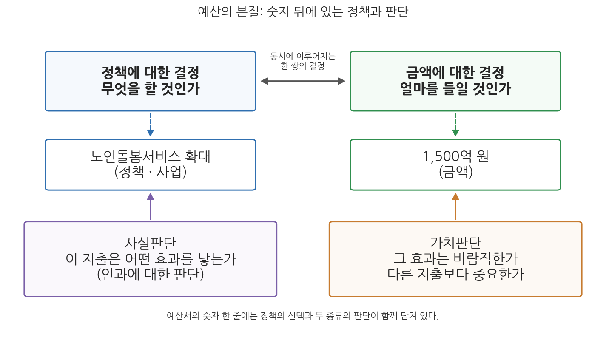
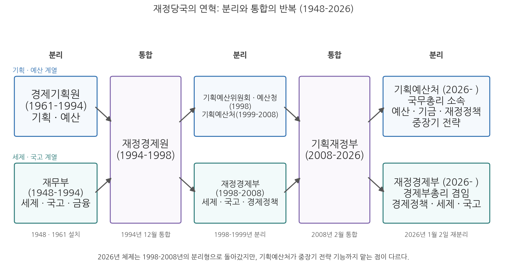

1주차 1차시. 강의의 문: 재정이란 무엇인가
최종 수정: 2026-08-13 · 이 교재는 학기 중에도 계속 업데이트됩니다
재정을 알고 판독할 수 있는 사람은 국가의 운명을 해명할 수 있다. (요제프 슘페터, 「조세국가의 위기」, 1918)
이 장에서 배우는 것
2025년 12월 2일, 국회 본회의는 2026년도 예산안을 의결했다. 확정된 총지출은 727.9조 원. 여야가 헌법이 정한 기한 안에 합의로 예산을 처리한 것은 2021년 이후 5년 만이었다. 727.9조 원이라는 숫자는 너무 커서 감각이 잘 오지 않는다. 인구를 약 5,100만 명으로 잡고 나누어 보면 국민 한 사람당 약 1,400만 원꼴이다. 갓난아기부터 노인까지, 정부가 한 해 동안 1인당 1,400만 원씩을 걷거나 빌려서 쓰겠다는 계획을 국민의 대표기관이 승인한 것이다.
그런데 이 어마어마한 돈은 결국 하나의 문서에 담겨 있다. 예산서다. 해마다 가을이 오기 전에 정부는 이듬해 예산안을 국회에 제출하는데, 그것은 몇 개의 큰 숫자가 아니라 수천 개에 이르는 사업 하나하나에 금액이 붙어 있는 방대한 목록이며, 첨부서류까지 합치면 혼자서는 다 읽을 엄두가 나지 않는 분량의 문서 더미다. 그 목록의 줄 하나는 어린이집 지원이고, 다른 한 줄은 전투기 도입이며, 또 다른 한 줄은 철도 건설이다. 숫자로 가득한 이 문서가 사실은 정부가 무엇을 하고 무엇을 하지 않을지에 대한 결정의 총목록이라는 것, 이것이 이 과목의 출발점이다. 그래서 첫 시간의 질문은 이렇다. 예산서에 담긴 "재정"이란 무엇이고, 우리는 왜 그것을 공부하는가. 그리고 2026년 현재, 한국에서는 누가 그 문서를 만드는가. 구체적으로 다음을 배운다.
- 재무행정론이 다루는 것: 정부의 재정 현상에 대한 지식·기술·가치, 그리고 이 교재가 가는 길
- 재정의 정의와 범위: 정부의 경제활동으로서의 재정, 예산(일반회계+특별회계)과 기금
- 예산의 본질: 예산은 숫자이기 전에 정책사업이며, 숫자 뒤에는 가치판단과 사실판단이 있다
- 2026년 재정당국의 재편: 기획예산처와 재정경제부의 연혁, 개편의 내용과 두 기관의 소관
이 장은 하나의 질문을 따라 전개된다. "재정이란 무엇이고, 2026년 한국에서는 누가 그것을 다루는가?"
1.1 재무행정론이라는 과목이 무엇을 다루는지, 이 교재가 어떤 순서로 가는지를 그린다 → 1.2 재정을 정부의 경제활동으로 정의하고 그 범위(예산과 기금)를 확인한다 → 1.3 예산의 본질이 정책사업이라는 것, 숫자 뒤의 가치판단과 사실판단을 뜯어본다 → 1.4 2026년 정부조직 개편으로 재편된 재정당국(기획예산처·재정경제부)의 연혁과 소관을 정리한다.
1.1 재무행정론이 다루는 것
재정 현상을 공부한다는 것
재무행정론은 정부의 재정 현상에 대한 지식과 기술, 그리고 가치를 학습하는 과목이다. 지식은 재정이 무엇이고 어떻게 움직이는지에 대한 이해이고, 기술은 예산을 편성하고 분석하고 평가하는 방법이며, 가치는 한정된 공공자원을 어디에 써야 옳은가에 대한 판단 기준이다. 학문의 언어로 바꾸면, 재정 현상을 기술하고(description) 설명하며(explanation) 예측하고(prediction) 통제·처방하는(control) 능력을 기르는 것이 이 과목의 목표다. 재정 통계를 읽고 나라살림의 현재 상태를 기술할 수 있어야 하고, 왜 그런 상태가 되었는지 이론으로 설명할 수 있어야 하며, 지금의 제도와 정책이 어떤 결과를 낳을지 내다보고, 더 나은 제도를 처방할 수 있어야 한다는 뜻이다.
왜 이것을 배워야 하는가. 정부의 정책과 사업은 재정 속에 구현되어 있기 때문이다. 어떤 정부가 복지를 중시한다고 말해도 복지 예산이 늘지 않았다면 그 말은 수사에 그친 것이고, 반대로 정부가 내세우지 않는 우선순위도 예산서의 숫자를 따라가면 드러난다. 그래서 재정은 정책의 목표이면서 동시에 수단이다. 재정은 정부가 그리는 비전이기도 하고, 그 비전을 제약하는 조건이기도 하다. 하고 싶은 일의 목록은 무한하지만 쓸 수 있는 돈은 유한하므로, 재정을 들여다보면 그 사회가 무엇을 포기하고 무엇을 선택했는지가 보인다. 이 장 첫머리에 인용한 슘페터(Joseph A. Schumpeter)의 말은 바로 이 뜻이다. 재정을 판독할 수 있는 사람은 국가가 어디로 가고 있는지를 해명할 수 있다. 요컨대 재무행정론은 궁극적으로 국민의 삶의 질을 높이기 위한 방법론이며, 그 방법론의 언어가 숫자와 제도일 뿐이다.
이 교재가 가는 길
이 교재의 각 장은 같은 흐름을 따른다. 먼저 개념과 이론을 이야기로 풀고, 다음으로 그 개념이 담긴 법조문과 제도를 직접 읽고, 이어서 한국의 실제 수치와 사례로 제도가 어떻게 작동하는지 확인하며, 마지막으로 쟁점과 함의를 따진다. 재무행정은 추상적 이론 과목이 아니라 헌법, 국가재정법, 정부조직법이라는 실정법 위에서 움직이는 제도의 세계이므로, 조문을 직접 읽는 훈련을 처음부터 함께 한다.
전체 구성은 다섯 부분이다. 먼저 재정의 기초 개념(희소성과 배분, 재정의 기능, 예산의 원칙)을 다진 뒤, 한국 재정의 구조(회계와 기금, 통합재정과 총지출, 예산의 분류와 종류)를 해부한다. 이어서 재정정책(확장재정, 재정준칙, 통화정책과의 관계)을 다루고, 재정과정(편성·심의·집행·결산)과 예산결정의 행태·이론으로 나아가며, 마지막으로 재정분석(비용편익분석, 예비타당성조사)과 재정개혁·평가로 마무리한다. 순서에 논리가 있다. 재정이 무엇인지 알아야 구조가 보이고, 구조를 알아야 정책과 과정이 보이며, 과정을 알아야 개혁을 논할 수 있기 때문이다.
1.2 재정 = 정부의 경제활동
나라살림이라는 말
재정을 일상어로 옮기면 나라살림이다. 가계가 소득을 벌어 생활비를 지출하듯, 정부도 수입을 조달해 지출을 한다. 그러나 나라살림은 집안 살림과 세 가지가 다르다. 첫째, 조달이 강제적이다. 정부 수입의 근간인 조세는 시장에서의 자발적 거래가 아니라 법률에 근거한 강제 징수다. 둘째, 목적이 다르다. 가계는 자신의 효용을, 기업은 이윤을 추구하지만 정부의 지출은 국방, 치안, 복지 같은 공공의 필요를 채우기 위한 것이다. 셋째, 규모와 파급이 다르다. 한 해 727.9조 원(2026년 본예산 기준 총지출)이 움직이면 그 자체가 국민경제 전체의 흐름을 바꾼다. 이 세 가지 특징을 담아 학술적으로 정의하면 다음과 같다.
재정(public finance)은 정부가 공공욕구를 충족하기 위하여 필요한 재원을 조달하고 관리하며 지출하는 경제활동, 곧 정부의 경제활동이다. 예산(budget)은 한 회계연도 동안의 수입과 지출에 관한 예정적 수치로, 계획의 과정이자 그 결과다. 재정이 예산을 포함하는 더 넓은 개념이지만 두 개념의 본질적 특성은 매우 유사하며, 한국 제도에서 재정의 범위를 명목적으로 정의하면 재정 = 예산(일반회계+특별회계) + 기금이다.
재정의 범위: 예산과 기금
정의의 마지막 문장을 조금 풀어 보자. 한국의 나라살림은 크게 예산과 기금이라는 두 주머니로 이루어진다. 예산은 다시 조세수입을 근간으로 나라의 일반적 지출을 감당하는 일반회계와, 특정한 사업이나 자금을 위해 따로 관리하는 특별회계로 나뉜다. 기금은 연금이나 보험처럼 특정 목적을 위해 예산과 별도로 운용되는 자금이다. 세 주머니를 합친 것이 재정의 전체 모습이고, 앞서 본 총지출 727.9조 원은 이 주머니들을 합산하되 내부 거래 등을 걸러 낸 규모다. 각 주머니의 성격과 설치 요건, 그리고 전체 규모를 정확히 재는 방법(총계와 순계, 통합재정, 총지출)은 이 교재의 2부에서 자세히 다루므로, 지금은 재정이 예산보다 넓은 개념이라는 것, 그리고 예산이라는 말이 좁게는 일반회계·특별회계를 가리킨다는 것만 기억해 두면 된다.
예정적 수치라는 표현도 눈여겨보아야 한다. 예산은 이미 쓴 돈의 기록(그것은 결산이다)이 아니라 앞으로 쓸 돈의 계획이다. 계획이므로 승인이 필요하고, 승인의 절차는 헌법이 정하고 있다.
헌법이 정한 나라살림의 규칙
"① 국회는 국가의 예산안을 심의·확정한다. ② 정부는 회계연도마다 예산안을 편성하여 회계연도 개시 90일 전까지 국회에 제출하고, 국회는 회계연도 개시 30일 전까지 이를 의결하여야 한다."
무슨 뜻인가. 첫째, 예산의 편성권은 정부에 있고 확정권은 국회에 있다. 정부가 계획을 만들고 국민의 대표가 그것을 심사해 승인하는 분업 구조를 헌법이 직접 정해 놓은 것이다. 둘째, 나라살림에는 시간표가 있다. 회계연도(한국은 1월 1일부터 12월 31일까지)라는 1년 단위의 주기가 있고, 그 주기에 맞추어 제출 기한과 의결 기한이 정해져 있다. 이 장 첫머리에서 2026년도 예산이 2025년 12월 2일에 의결된 것이 "헌법이 정한 기한 안"의 처리였던 이유가 바로 이 조문이다. 회계연도 개시(2026년 1월 1일) 30일 전이 12월 2일이기 때문이다. 참고로 제출 기한 쪽은 국가재정법 제33조가 헌법의 90일보다 앞당겨진 120일 전으로 정하고 있어, 정부는 해마다 9월 초까지 예산안을 국회에 내야 한다. 예산이 왜 이런 절차와 시간표를 갖는지, 사전의결과 같은 예산 원칙의 논리는 2주차 2차시에서, 편성에서 결산까지의 전체 주기는 이 교재의 4부에서 다룬다.
1.3 예산의 본질은 정책사업: 숫자 뒤의 가치판단과 사실판단
"예산은 숫자의 개관"
독일의 재정학자 바그너(A. G. H. Wagner)는 예산을 "숫자의 개관"이라고 불렀다. 겉으로 보이는 예산은 분명 숫자의 목록이다. 그러나 그 숫자들은 저절로 생겨난 것이 아니라, 하나하나가 어떤 정책 또는 사업에 대한 결정의 흔적이다. 예산에 관한 결정은 사실 두 개의 결정이 겹쳐진 것이다. 하나는 정책에 대한 결정으로, 목표를 달성하기 위한 대안을 선택하는 과정이다. 예컨대 1,500억 원이 있을 때 그 돈을 요양원 신축에 쓸 것인가, 아니면 노인돌봄서비스 확충에 쓸 것인가. 다른 하나는 금액에 대한 결정으로, 선택한 정책대안에 소요되는 비용을 계산해 화폐적 수치를 부여하는 일이다. 노인돌봄서비스를 택했다면 몇 명에게 어떤 서비스를 제공할 것이며 그 값은 얼마인가. 두 결정은 순서대로가 아니라 상호 밀접한 연관 속에서 동시에 이루어진다. 쓸 수 있는 돈의 크기가 선택 가능한 정책의 범위를 정하고, 선택한 정책의 내용이 필요한 돈의 크기를 정하기 때문이다.
가치판단과 사실판단
그렇다면 그 결정은 무엇에 근거해 내려지는가. 정책결정자는 가치판단과 사실판단, 그리고 양자의 연결에 대한 판단에 따라 결정하며, 예산에 대한 결정도 마찬가지다. 사실판단은 "이 지출이 어떠한 인과적 효과를 가질 것인가"에 대한 판단이다. 고속철도를 확장하면 여객 수송이 실제로 늘어날 것인가. 이것은 옳고 그름의 문제가 아니라 참과 거짓의 문제이며, 원리적으로는 데이터와 분석으로 따질 수 있다. 가치판단은 "그 효과는 바람직한가, 다른 지출에 비해 더 중요한가"에 대한 판단이다. 여객 수송이 늘어나는 것은 좋은 일인가. 같은 돈으로 도로를 놓는 것보다 철도를 놓는 것이 더 나은가. 이것은 분석만으로 결판나지 않으며, 무엇을 중시하는가라는 관점이 개입한다. 그림 1-1이 이 구조를 보여 준다.

그림 1-1을 읽는 법은 이렇다. 위 줄의 두 상자는 예산 결정이 정책에 대한 결정과 금액에 대한 결정의 한 쌍임을 보여 주고, 가운데 줄은 그 예시(노인돌봄서비스라는 사업과 1,500억 원이라는 금액)이며, 아래 두 상자는 이 한 쌍의 결정을 떠받치는 두 종류의 판단이다. 이 그림에서 알 수 있는 것은 두 가지다. 첫째, 예산서의 숫자 한 줄을 이해한다는 것은 그 뒤의 정책 선택까지 이해한다는 뜻이다. 둘째, 예산을 둘러싼 논쟁은 사실 다툼(효과가 있는가)과 가치 다툼(바람직한가)이 얽힌 것이어서, 두 층위를 구분해야 논쟁이 정리된다. 이 구분은 이 교재 전체에서 계속 쓰인다. 뒤에서 배울 비용편익분석과 예비타당성조사(예타)는 사실판단을 체계화하려는 제도이고, 예산심의라는 정치과정은 가치판단이 부딪히고 조정되는 무대다.
결과물로서의 예산: 세 개의 얼굴
이렇게 만들어진 예산이라는 결과물은 무엇을 담고 있는가. 세 가지 얼굴로 정리할 수 있다. 첫째, 예산은 조직의 상태에 대한 묘사다. 얼마의 금액으로 무엇을 구입해 어떤 일을 하며 무엇을 달성하려는지를 기술한 문서이므로, 예산에는 그 조직의 목표와 의지가 담겨 있다. 부처의 예산서를 읽으면 그 부처가 내년에 무엇이 되고자 하는지가 보인다. 둘째, 예산은 인과관계의 설명이다. 인력과 물자를 조달해 어떤 활동을 하면 어떤 결과가 나온다는 가정, 곧 자원-활동-결과의 인과적 과정을 전제하고 있다. 예산심의에서 사업의 효과를 따지고, 대규모 사업에 착수하기 전에 타당성조사를 요구하는 것은 이 인과 가정을 검증하려는 절차다. 셋째, 예산은 선호나 가치의 언명이다. 그것은 결정자 개인의 선호일 수도 있고 협상과 타협을 거친 집합적 선호일 수도 있는데, 어느 쪽이든 예산은 정치과정의 산물이며 국가적 우선순위의 표현이다. 총지출 727.9조 원의 내역은 2026년의 한국이라는 정치공동체가 무엇을 앞세우기로 했는지에 대한 공식 기록인 셈이다.
세 얼굴 중 어느 것을 강조하는가에 따라 예산을 보는 학문의 시선도 갈린다. 묘사와 인과에 주목하면 분석과 계산의 학문(경제학적 접근)이 되고, 선호와 정치에 주목하면 협상과 권력의 학문(정치학적 접근)이 된다. 이 두 시선은 바로 다음 차시(1주차 2차시)에서 경제원리와 정치원리라는 이름으로 다시 만나고, 예산이론을 다루는 4부에서 총체주의와 점증주의라는 이론 체계로 발전한다.
1.4 2026년 재정당국의 재편: 기획예산처와 재정경제부
누가 예산을 만드는가
예산이 정책사업의 목록이라면, 누가 그 목록을 만드는가라는 질문이 바로 따라 나온다. 헌법 제54조는 "정부"가 편성한다고 답하지만, 실제로 수백 개 기관의 요구를 받아 심사하고 하나의 예산안으로 묶어 내는 일은 정부 안의 특정 부처, 곧 중앙예산기관의 몫이다. 그리고 2026년 1월, 한국의 중앙예산기관이 바뀌었다. 18년 동안 예산과 세제, 국고와 경제정책을 한 손에 쥐고 있던 기획재정부가 기획예산처와 재정경제부(재경부)라는 두 부처로 갈라진 것이다. 이 교재가 다루는 거의 모든 제도(예산 편성, 국가재정운용계획, 예타, 세제, 국고, 결산)의 담당 기관이 이 개편으로 정해졌으므로, 이 절의 내용은 이후 모든 장의 전제가 된다.
분리와 통합의 연혁: 1948년에서 2026년까지
2026년의 개편은 갑자기 떨어진 사건이 아니라, 정부 수립 이후 78년간 이어진 분리와 통합의 진자운동의 최신 국면이다. 그림 1-2의 연표를 따라가 보자.

그림 1-2를 읽는 법은 이렇다. 위 줄은 기획·예산 기능을 맡은 기관의 계보이고, 아래 줄은 세제·국고 기능을 맡은 기관의 계보이며, 두 줄이 하나의 큰 상자로 합쳐진 구간(1994-1998, 2008-2026)이 통합의 시기다. 정부 수립과 함께 출범한 재무부(1948)는 세제·국고·금융을 관장했고, 개발연대의 문을 연 경제기획원(1961)은 경제개발계획의 수립과 예산 편성을 함께 맡았다. 계획을 세우는 기관이 돈의 배분권까지 쥐게 한 이 설계는 한국 발전국가의 특징으로 꼽힌다. 두 기관이 나란히 달리던 체제는 1994년 12월 김영삼 정부의 조직개편으로 끝났다. 경제기획원과 재무부가 재정경제원이라는 하나의 거대 부처로 통합된 것이다. 그러나 1997년 외환위기를 겪으며 권한이 한 곳에 집중된 데 대한 반성이 일었고, 1998년 2월 김대중 정부는 재정경제원을 재정경제부로 개편하면서 예산 기능을 대통령 직속 기획예산위원회와 재정경제부 외청인 예산청으로 떼어냈다. 1999년 5월에는 기획예산위원회와 예산청을 합쳐 기획예산처를 설치했다. 예산은 기획예산처, 세제·국고는 재정경제부라는 분리형 체제는 2008년 2월 이명박 정부가 두 기관을 기획재정부로 재통합할 때까지 약 10년간 유지되었다. 그리고 2026년 1월, 기획재정부는 다시 기획예산처와 재정경제부로 나뉘었다. 분리에서 통합으로, 다시 분리로. 이 그림에서 알 수 있는 것은 두 기능을 합칠 것인가 나눌 것인가가 한국 행정사에서 반복되어 온 선택의 문제라는 점이다.
2026년 개편: 무엇이 어떻게 바뀌었나
개편의 경과부터 보자. 기획재정부 분리를 담은 정부조직법 개정안은 2025년 9월 26일 국회 본회의를 재석 180명 중 찬성 174명으로 통과했다. 이 개정안에는 기획재정부 분리 외에 검찰청 폐지, 과학기술부총리 승격, 기후에너지환경부 재편 등 정부 전반의 개편이 함께 담겨 있었다. 개정 정부조직법은 법률 제21065호로 2025년 10월 1일 공포되었고, 기획재정부를 분리하는 조항은 2026년 1월 2일 시행되었다. 같은 날 두 부처는 정부세종청사에서 공식 출범했다.
두 기관은 무엇을 나누어 맡았는가. 법의 언어로 직접 확인하자.
제23조: "... 중장기 국가발전전략수립, 재정정책의 수립, 예산·기금의 편성·집행·성과관리, 민간투자 및 국가채무에 관한 사무 ..."
제30조: "... 경제정책의 수립·총괄·조정, 화폐·외환·국고·정부회계·내국세제·관세·국제금융, 공공기관 관리, 경제협력 및 국유재산에 관한 사무 ..."
무슨 뜻인가. 나라살림의 지출 쪽 설계도(예산과 기금의 편성·집행·성과관리)와 재정정책, 그리고 중장기 국가발전전략은 기획예산처가 맡는다. 기획예산처는 국무총리 소속의 중앙행정기관인데, 처(處)임에도 처장이 아니라 장관을 두고 그 장관을 국무위원으로 보하는 특별한 위상을 가진다. 조직은 차관 1명 아래 미래전략기획실·예산실·기획조정실을 두고 출범했다. 반면 수입 쪽의 근간인 세제와 나라의 금고인 국고, 정부회계, 그리고 경제정책의 총괄·조정은 재정경제부가 맡는다. 재정경제부장관은 경제부총리를 겸임하며, 세제실과 국고실을 포함한 2차관 6실 체제로 출범했다. 국세청·관세청·조달청 세 외청도 재정경제부 소속이다(옛 기획재정부의 네 번째 외청이던 통계청은 2025년 10월 1일 국무총리 소속 국가데이터처로 승격되어 재정 부처의 우산에서 벗어났다). 부총리 체제도 함께 바뀌어, 경제부총리(재정경제부장관 겸임)와 과학기술부총리(과학기술정보통신부장관 겸임)의 복수 부총리 체제가 되었고 교육부장관이 겸임하던 사회부총리는 폐지되었다. 초대 부총리 겸 재정경제부장관은 구윤철, 초대 기획예산처장관은 박홍근(2026년 3월 25일 취임)이다.
이 분업은 국가재정법의 조문에도 그대로 새겨졌다. 정부조직법 개정에 따른 후속 정비로, 국가재정법에서 "기획재정부장관"이 맡던 사무가 2026년 1월 2일자로 두 장관에게 나뉘었다. 표 1-1이 핵심 조문의 배분이다.
표 1-1. 국가재정법상 주요 사무의 소관 배분 (2026년 1월 2일 시행)
| 사무 | 국가재정법 조문 | 소관 |
|---|---|---|
| 국가재정운용계획 수립 | 제7조 | 기획예산처장관 |
| 예산안편성지침 통보 | 제29조 | 기획예산처장관 |
| 예산안 편성(국회 제출은 정부) | 제32-33조 | 기획예산처장관 |
| 예비타당성조사 실시 | 제38조 | 기획예산처장관 |
| 기금운용계획안 작성지침 통보 | 제66조 | 기획예산처장관 |
| 국가결산보고서 작성·제출 | 제58-61조 | 재정경제부장관 |
표 1-1을 읽으면 분업의 논리가 보인다. 돈을 쓰기 전의 일, 곧 중기 계획을 세우고 편성지침을 내리고 예산안을 만들고 대규모 사업의 타당성을 조사하는 일은 모두 기획예산처장관의 사무다. 반면 회계연도가 끝난 뒤 나라살림의 성적표인 국가결산보고서를 작성하는 일은 정부회계를 관장하는 재정경제부장관의 사무다. 계획과 편성은 기획예산처, 세입·국고·회계는 재정경제부라는 구도를 기억해 두면 이후 모든 장의 서술이 자연스럽게 읽힌다.
분리 첫해의 풍경
제도의 변화는 문서 위의 일이지만, 두 부처의 분업은 출범 첫해부터 실제 일정 속에서 확인되었다.
기획예산처는 2026년 3월 30일 '2027년도 예산안 편성 및 기금운용계획안 작성지침'을 국무회의에서 확정하고 3월 31일까지 각 중앙관서에 통보했다. 이 지침에서 처음으로 지출구조조정 기준을 공개하며 재량지출 15%, 의무지출 10% 감축 목표를 제시했다. 2026년 4월 11일 국회에서 확정된 2026년 첫 추가경정예산(추경) 26.2조 원(중동전쟁발 고유가 대응 등)도 기획예산처가 편성해 발표했다. 한편 재정경제부는 2026년 4월 6일 국무회의에서 심의·의결된 2025회계연도 국가결산보고서를 작성·발표했다. 이 결산에서 국가채무(D1)는 1,304.5조 원으로 GDP 대비 49.0%를 기록했다. (출처: 대한민국 정책브리핑, 2026년 3-4월; 기획예산처·재정경제부 보도자료)
이 사례가 보여 주는 것은 표 1-1의 조문 배분이 실무에서 그대로 작동하고 있다는 점이다. 다음 해 예산의 밑그림(편성지침)과 연중의 예산 변경(추경)은 기획예산처의 이름으로, 지난해 살림의 결산은 재정경제부의 이름으로 발표되었다. 같은 뉴스라도 발표 부처를 보면 그 일이 재정과정의 어느 국면에 속하는지 짐작할 수 있게 된 셈이다.
쟁점: 왜 나누고, 왜 합치는가
그렇다면 애초에 왜 나누는가, 그리고 왜 합쳤다가 다시 나누는가.
통합형의 논리는 일관성이다. 세입(세제)과 세출(예산), 경제정책과 재정운용을 한 부처가 관장하면 나라살림 전체를 하나의 그림으로 조율할 수 있고, 위기 대응도 빠르다. 2008년의 통합은 이 논리 위에 있었다. 분리형의 논리는 견제와 전문성이다. 예산 편성권과 세제·국고·경제정책 권한이 한 부처에 모이면 그 부처는 다른 모든 부처를 압도하는 공룡이 되고, 재정건전성 관리자와 확장정책 설계자의 역할이 한 몸에 겹쳐 이해충돌이 생긴다는 것이다. 1998-1999년의 분리와 2026년의 분리는 이 논리 위에 있다. 어느 쪽이 옳은가에 대한 세계 공통의 정답은 없다. 예산기구와 재무기구를 나눈 나라도, 합친 나라도 있으며, 한국은 두 모형 사이를 오가며 각 모형의 장단점을 스스로 실험해 온 드문 사례다. 중앙예산기관의 행태와 역할은 4부에서 이론적으로 다시 다룬다.
2026년 체제를 1998-2008년 체제의 단순 복원으로 볼 수 있는가도 논점이다. 기구의 이름(기획예산처, 재정경제부)은 같지만, 2026년의 기획예산처는 예산·기금에 더해 중장기 국가발전전략 수립 기능까지 가져가 미래전략기획실을 신설했다는 점이 당시와 다른 것으로 보도되었다. 예산기구가 단기 배분만이 아니라 장기 전략까지 맡는 설계가 실제로 어떻게 작동할지는 이 체제가 앞으로 답해야 할 질문이다.
이 교재의 현재 시제 서술에서 중앙예산기관은 기획예산처, 세제·국고·경제정책 총괄기관은 재정경제부다. 역사 속의 사건은 당시 기관명으로 쓴다. 예컨대 "2008-2026년의 기획재정부", "1999년 김대중 정부의 기획예산처"처럼 시점을 함께 밝힌다. 오래된 교과서나 기사에서 "기획재정부 예산실", "기재부 세제실" 같은 표현을 만나면, 예산 기능은 지금의 기획예산처로, 세제·국고 기능은 지금의 재정경제부로 옮겨 읽으면 된다. 1998-2008년에도 같은 이름의 두 부처가 있었으므로, 연도를 확인하는 습관이 혼동을 막는 가장 확실한 방법이다.
이것으로 강의의 문을 열었다. 재정은 정부의 경제활동이고, 예산은 그 활동의 계획이자 정책사업의 목록이며, 2026년의 한국에서는 기획예산처와 재정경제부가 그 살림을 나누어 맡는다. 다음 차시에서는 이 살림의 가장 근본적인 조건인 희소성에서 출발해, 한정된 자원을 민간과 공공 사이에(거시적 배분), 그리고 공공부문 안의 수많은 사업 사이에(미시적 배분) 나누는 선택의 논리를 살펴본다. 그리고 2주차에서는 그렇게 배분된 재정이 실제로 어떤 기능(배분, 재분배, 안정, 삶의 질)을 수행하는지를 다룬다.
요약
재무행정론은 정부의 재정 현상에 대한 지식·기술·가치를 학습하여 재정을 기술·설명·예측·처방하는 능력을 기르는 과목이며, 정부의 정책과 사업이 재정 속에 구현되어 있기에 재정은 정책의 목표이자 수단이고 비전이자 제약조건이다. 재정은 정부가 공공욕구를 충족하기 위해 재원을 조달·관리·지출하는 경제활동, 곧 정부의 경제활동으로 정의되고, 예산은 한 회계연도의 수입과 지출에 관한 예정적 수치로서 재정보다 좁은 개념이며, 한국 제도에서 재정의 범위는 명목적으로 예산(일반회계+특별회계)과 기금의 합이다. 헌법 제54조는 정부가 편성하고 국회가 심의·확정하는 분업과 회계연도의 시간표를 정하고 있다. 예산의 본질은 정책사업이다. 예산 결정은 정책에 대한 결정과 금액에 대한 결정이 동시에 이루어지는 한 쌍의 결정이고, 그 바탕에는 지출의 인과적 효과에 대한 사실판단과 효과의 바람직함에 대한 가치판단이 있으며, 결과물로서의 예산은 조직 상태의 묘사이자 인과관계의 설명이자 선호와 가치의 언명이다. 2026년 1월 2일 시행된 정부조직법 개정(2025년 9월 26일 국회 통과, 법률 제21065호)으로 기획재정부는 기획예산처와 재정경제부로 분리되었다. 국무총리 소속 기획예산처는 예산·기금의 편성·집행·성과관리, 재정정책, 중장기 국가발전전략, 민간투자·국가채무를 맡고, 경제부총리가 이끄는 재정경제부는 경제정책 총괄, 세제, 국고, 정부회계, 국제금융, 공공기관 관리를 맡으며, 국가재정법상 국가재정운용계획·예산안편성지침·예산안 편성·예비타당성조사·기금운용계획안 작성지침은 기획예산처장관, 국가결산보고서는 재정경제부장관 소관이 되었다. 이 개편은 경제기획원·재무부의 분리(1948·1961)에서 재정경제원 통합(1994), 재정경제부·기획예산처 분리(1998-1999), 기획재정부 통합(2008)을 거쳐 온 분리와 통합의 역사 위에 있으며, 이후 모든 장의 기관 서술은 이 체제를 전제로 한다.
토론·복습 문제
1-1. (서술형 연습) 재정의 정의를 제시하고 예산과의 개념적 관계(포함 관계와 본질적 유사성)를 설명하시오. 이어서 "결과물로서의 예산"이 갖는 세 가지 성격(상태의 묘사, 인과관계의 설명, 선호·가치의 언명)을 각각 설명하고, 2026년 본예산(총지출 727.9조 원)을 예로 들어 세 성격이 어떻게 드러나는지 서술하시오.
1-2. (조문 적용형) 다음 각 업무가 2026년 현재 기획예산처장관과 재정경제부장관 중 누구의 소관인지 표 1-1과 정부조직법의 관장 사무를 근거로 판별하고, 그렇게 배분된 논리를 설명하시오. (가) 2028년도 예산안편성지침을 각 부처에 통보하는 일 (나) 2026회계연도 국가결산보고서를 작성하는 일 (다) 총사업비 5,000억 원 규모 신규 철도사업의 예비타당성조사를 실시하는 일 (라) 소득세율 조정안을 마련하는 일
1-3. (찬반 토론) "예산 기능과 세제·국고 기능은 한 부처가 통합 관장하는 것이 바람직하다"는 주장에 대해 찬성과 반대의 논거를 각각 제시하시오. 2008년 통합(기획재정부 출범)의 논리와 2026년 분리(기획예산처·재정경제부 출범)의 논리를 논거로 활용하고, 자신의 입장을 정하시오.
1-4. 여러분이 관심 있는 정부 사업 하나를 골라, 그 사업에 대한 예산 결정에 필요한 사실판단(이 지출은 어떤 효과를 낳는가)과 가치판단(그 효과는 바람직한가, 다른 지출보다 중요한가)을 각각 두 개 이상 구체적 질문의 형태로 만들어 보시오. 그리고 두 판단 중 어느 쪽이 데이터와 분석으로 해결될 수 있고 어느 쪽이 정치과정의 몫인지 논하시오.